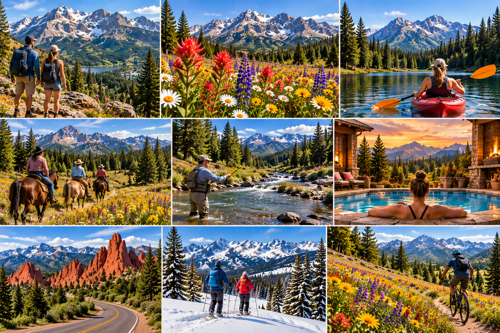
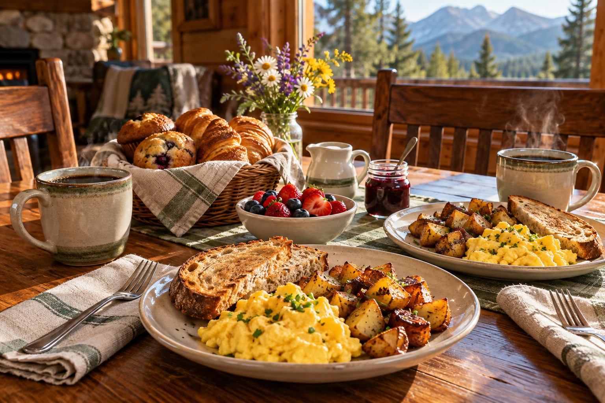

Friday · Settle In
Arrive after 3:00 PM, settle into your room and take a quiet stroll beside the creek.
From peaceful mountain trails and colorful wildflower meadows to kayaking, horseback riding, and relaxing by the pool, discover unforgettable experiences during your stay at Wildflower Bliss Lodge.

Wildflower walks, creekside mornings and time to enjoy the mountains.
A simple way to enjoy your stay, from your first mountain evening to one last slow breakfast.
Arrive after 3:00 PM, settle into your room and take a quiet stroll beside the creek.
Start with breakfast, enjoy a wildflower walk or mountain adventure, then return for a peaceful evening at the inn.
Savor breakfast and a final cup of coffee before checking out at 11:00 AM.
Spend your days surrounded by mountain air, wildflowers, whispering pines and the soothing sound of our creek.
Wander through colorful mountain meadows and discover Colorado's seasonal wildflowers just beyond your door.
Find a quiet chair beside the creek and begin your day with coffee, fresh mountain air and the sound of water.
Explore hiking trails, fishing, kayaking, scenic drives,during the Summer and unforgettable Colorado snowy slopes in the Winter before returning to the warmth of the inn.
A mountain creek winds through the grounds of Wildflower Bliss Inn, passing beneath the pines and through the meadow. Settle into a creekside chair, bring a book or simply listen to the water move over the stones.
Every morning at Wildflower Bliss begins around the table. Wake to freshly brewed coffee and a homemade breakfast prepared with seasonal ingredients.
Enjoy warm pastries, fresh fruit, farm-style eggs and rotating house specialties before heading into the mountains for the day.
Breakfast is included with every overnight stay.

Come experience wildflowers, mountain mornings, homemade breakfasts and peaceful evenings beneath the Colorado sky.